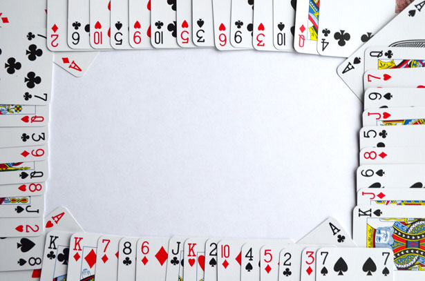

Card Games Information
Home
Twenty One
History
Origin
Playing cards were invented by the Chinese during the Tang Dynasty.
Suit Signs
The suit signs: coins, cups, swords, sticks, were variously adapted.
3 Main Suit Systems
Latin, Germanic, and French.
Modern Suits
Our modern suits are from French designs.
Improvements to Playing Cards
- Rounded corners
- Refined finishes
- Double-ended figures
- Joker
How to Play Twenty One
Objective and Rules:
Bring your hand as close to 21 without going over 21 by taking extra cards from the deck.
The computer will be the dealer. You and the player are dealt 2 cards. Both of your cards are face up. One of the dealer’s cards is face up and the other is face down.
● All numbered cards are worth their face value in points.
● All picture cards are worth 10 points.
● Aces can be worth 1 point or 11 points depending on the hand.
You have 2 opportunities:
1) Stay
Your turn ends. The dealer flips over its face down card and must complete its hand.
2) Hit
You get the next card from the deck. You can keep this up until decide to stay, or bust.
Bust
A bust is when you go over 21. The dealer wins.
Dealer's Turn
If the dealer has less than 17, it must hit. If the dealer has 17 or over, it must stay.
Deciding the Winner
The player with the hand closest to 21 wins. If you and the dealer have the same number of points, it’s a tie and no one wins.